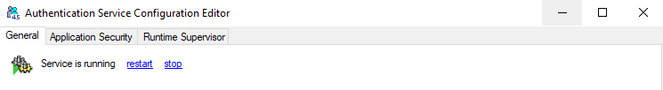

Authentication Service
Update
Sichern Sie den bestehenden Authentication Service in einem neu angelegten Verzeichnis.
Deinstallieren Sie den Windows-Service des bestehenden Authentication Service. Dazu kann der AuthenticationServiceConfigEditor verwendet werden (siehe Deinstallation).
Kopieren Sie die neuen Dateien aus dem Ordner
bin\in den Zielordner.Note
Die Datei
AuthenticationService.exe.configim Zielverzeichnis muss erhalten bleiben. Darin sind alle Konfigurationseinstellungen für den Authentication Service gespeichert.Installieren Sie den neuen Authentication Service wie im Abschnitt Installation ab 3. beschrieben.
Note
Auch wenn Sie im AuthenticationServiceConfigEditor keine Änderungen vornehmen, speichern Sie in jeden Fall mit der Funktion Save Changes.
Update der Datenbank
Bei der Datenbank handelt es sich um ein Repository. Ein Update auf die entsprechende Framework-Studio Version passiert folgendermaßen:
- Handelt es sich um ein Entwicklungs-Repository, dann erfolgt das Update über Framework Studio.
- Bei einem Runtime-Repository erfolgt das Update über den Publish Wizard oder Publish2Go Wizard.
Installation
Erstellen Sie den Zielordner für den Service.
Empfehlung:C:\Programme\enventa Group\FS AuthService\Kopieren Sie den Inhalt des Ordners
bin\in den Zielordner.Jetzt müssen Sie die Konfiguration des Services festlegen. Führen Sie dazu im Zielordner das Programm
AuthenticationServiceConfigEditor.exeaus. Dieses Programm bearbeitet den Inhalt der Konfigurations-DateiAuthenticationService.exe.config.Sie erhalten das folgende Bild:

Database Connection
Geben Sie im Abschnitt Database Connection die gewünschte Verbindung zu der Datenbank an, in welcher der Service die Benutzerdaten ablegen soll. Standardmäßig wird dazu das Repository Ihrer Anwendung verwendet. Mit Test connection können Sie prüfen, ob die angegebene Verbindung zur Datenbank hergestellt werden kann.
Service
Geben Sie im Abschnitt Service die folgenden Daten ein:
Name
Geben Sie ggf. einen anderen Namen für den Service an.
ID
Die ID müssen Sie mit Generate ID neu erzeugen. Dabei wird eine absolut eindeutige Guid generiert.
URL
Die URL können Sie mit Set Default auf den eigenen Rechnernamen setzen.
Dort ist z.B. auch eine IP-Adresse möglich.
Es kann ein anderer Port als 20001 verwendet werden.
Dann müssen die Konfigurationen der Clients, die mit dem Service kommunizieren sollen, auf den geänderten Port angepasst werden.
Private Key / Public Key
Für Private Key und Public Key müssen Sie mit Generate Keypair ein neues Schlüsselpaar generieren.
Windows-Service
Hier können nur Änderungen vorgenommen werden, solange der Service nicht installiert worden ist.
Ändern Sie diese Einstellungen auch niemals manuell in der AuthenticationService.exe.config.
Ansonsten kann der Authentication-Service dem Windows-Dienst nicht mehr zugeordnet werden.
Service Name
Unter diesem Namen wird der Service in den Windows-Diensten registriert. In dem Feld können Sie einen Namens-Zusatz angeben. Das ist vor allem dann notwendig, wenn Sie mehrere Authentication-Services auf einem Rechner installieren, da der Name in den Windows-Diensten eindeutig sein muss.
Description
Dieses Feld wird als Description in den Windows-Diensten gespeichert.
Nachträgliche Änderung
Wenn Sie diese Einstellung nachträglich ändern möchten, dann müssen Sie:
- den Dienst mit dem Link stop Service beenden,
- ihn mit dem Link uninstall Service deinstallieren,
- die Änderungen vornehmen und speichern und
- den Dienst mit dem Link install Service wieder installieren. Dabei sollte der Benutzer-Account des Dienstes wieder der von vorher sein – ggf. vor der ganzen Aktion merken.
Speichern Sie die Änderungen mit Save Changes ab.
Registerkarte Application Security
Auf der Registerkarte Application Security können erweiterte Sicherheitsanforderungen und die gewünschte Form der Authentification, die für Ihre Anwendungen gelten sollen, konfiguriert werden.

General Settings
Maximum username length
Hier können Sie die vom Authentifizierungsdienst geduldete Maximallänge für Benutzernamen ändern.
Set Defaults
Mit Set Default werden die Standardeinstellungen dieser Registerkarte wiederhergestellt.
Enable advanced Security
Mit dem Schalter Enable advanced security legen Sie fest, ob die erweiterten Sicherheitseinstellungen in der User Password Authentication grundsätzlich aktiviert werden sollen. Wenn Sie diese nicht aktivieren, sind alle weiteren darin enthaltenden Einstellungen des Abschnittes bedeutungslos.
OpenID Connect Authentication
Im darauf folgenden Abschnitt OpenID Connect Authentication kann die Authentification per OpenIDConnect konfiguriert werden.
Beachten Sie die Dokumentation für die Einrichtung von OpenID Connect.
Mit Oidc Active kann man steuern, ob OpenID Connect verwendet werden soll (default, wenn nicht angegeben, ist true).
Hierfür sind Identity Provider URL und ClientID erforderlich. Das ClientSecret ist empfohlen, aber nicht zwingend notwendig.
Falls ein ClientSecret genutzt wird, wird auch empfohlen die Client Secret Expiration zu setzen.
Optional sind zudem der Scope (default, wenn nicht angegeben, ist 'openid profile email') und Claim (default, wenn nicht angegeben, ist 'email'). Das Label for Claim ist optional und wird, wenn angegeben, in die Runtime Administration übernommen.
Note
Beachten Sie hierbei die jeweiligen Anforderungen des Identity Providers, den Sie nutzen wollen. Dieser kann teilweise andere Scopes oder Claims bzw. ein valides ClientSecret voraussetzen.
Domain Authentication
Die Domain Authentication widerrum ermöglicht Windows-Authentifizierung. Es ist entweder eine Authentification per Domain oder OpenID Connect möglich.
Domain controller
Das Eingabefeld Domain controller muss leer bleiben, wenn die Authentifizierung beim Start der Endanwendung nicht automatisch mit den angemeldeten Windows-Benutzern erfolgen soll. Andernfalls muss hier der zu verwendende Domain Controller (DC) angegeben werden (z.B. mydc.mycompany.com).
Domain
Das Eingabefeld Domain muss ebenfalls leer bleiben, wenn die Authentifizierung beim Start der Endanwendung nicht automatisch mit dem angemeldeten Windows-Benutzer erfolgen soll. Andernfalls muss hier in Großbuchstaben der Name der Domäne angegeben werden (z.B. MYDOMAIN). Die Authentifizierung über die Domäne kann nur dann funktionieren, wenn Client und Authentication Service zur angegebenen Domäne gehören.
User Password Authentication
Bereich User Password Authentication zur Authentification per Benutzername-Passwort-Kombination enthält folgende Einstellungen im Einzelnen:
Enforce character
Erzwingt, dass in jedem Passwort mindestens ein Buchstabe vorkommen muss.
Enforce upper and lower
Erzwingt, dass in jedem Passwort mindestens ein Groß- und ein Kleinbuchstabe vorkommen muss.
Enforce special character
Erzwingt, dass in jedem Passwort mindestens ein Sonderzeichen vorkommen muss. Welche Zeichen als Sonderzeichen erkannt werden, definieren Sie im Textfeld Special characters.
Enforce number
Erzwingt, dass in jedem Password mindestens eine Ziffer vorkommen muss.
Minimum length
Legt die Mindestlänge für Passworte fest.
Exclusion list
Durch Leerzeichen getrennt können Sie hier Worte definieren, die im Passwort (unabhängig von der Groß-Kleinschreibung) nicht vorkommen dürfen. username steht dabei für den Namen des Benutzers.
Contains excluded
Wenn diese Checkbox gesetzt ist, werden alle Passworte abgelehnt, in denen eines der Worte aus der Exclusion list vorkommt. Ist die Checkbox nicht gesetzt, werden nur die Passworte abgelehnt, die mit einem Wort aus der Exclusion list übereinstimmen.
Prohibit recent
Wenn ein Benutzer sein Passwort ändert, können die letzten x Passworte des Benutzers als neues Passwort gesperrt werden.
Minimum change period
Minimale Gültigkeitsdauer von Passworten in Tagen.
Maximum change period
Maximale Gültigkeitsdauer von Passworten in Tagen.
Maximum failed logins
Anzahl der nicht erfolgreichen Anmeldeversuche, nach welcher der Benutzerzugang temporär gesperrt wird.
Lock time
Zeit (im Format Stunden:Minuten:Sekunden), die ein Benutzerzugang gesperrt wird, wenn die maximale Anzahl von nicht erfolgreichen Anmeldeversuchen erreicht ist.
Speichern Sie Ihre Änderungen mit Save Changes.
Registerkarte Runtime Supervisor
Auf der Registerkarte Runtime Supervisor kann angegeben werden, an welchem Runtime Supervisor sich der Authentication Service registrieren soll.

Checkbox Enable
Diese Checkbox muss gesetzt werden, damit der Runtime Supervisor aktiviert wird.
Runtime Supervisor Url
Hier können der Server und der Port angegeben werden. Die vollständige URL wird automatisch aufgebaut. Mit dem Button Test kann versucht werden, ob eine Verbindung zum Runtime Supervisor aufgebaut werden kann.
Nähere Informationen dazu sind in der Dokumentation des Runtime Supervisor zu finden.
Speichern Sie Ihre Änderungen mit Save Changes.
Installation fortfahren
Jetzt müssen Sie das Programm als Dienst im Betriebssystem registrieren. Klicken Sie dazu den Link install Service
Sie erhalten folgendes Bild:

Geben Sie hier den Benutzer an, mit welchem der Dienst ausgeführt werden soll.
Es wird empfohlen nach Möglichkeit einen Domain-User anzugeben, da die System-Konten standardmäßig nicht über die notwendigen Rechte verfügen. Wählen Sie dazu User aus und geben Sie in User credentials die Benutzerdaten an.
Der User muss im Format
Domain\Userangegeben werden.Je nach Konfiguration des Systems kann ggf. auch eines der Systemkonten verwendet werden.
Diese Routine erzeugt einige Protokoll-Dateien über den Installationsverlauf im Zielordner. Diese sind kein Problem.
Überprüfen Sie ggf. ob der Dienst erfolgreich installiert wurde. Im oberen Teil des Fensters sollten Sie folgendes Bild sehen:

Mögliche Gründe für das Fehlschlagen der Installation:
- Die Konfiguration ist fehlerhaft. Prüfen Sie die Angaben*.*
- Der angegebene Benutzer hat nicht die notwendigen Rechte. Prüfen Sie ggf. das Ereignisprotokoll.
Deinstallation
Warning
Es gehen die Einstellungen aus der Konfigurations-Datei AuthenticationService.exe.config verloren. Sichern Sie diese ggf. vorher.
- Starten Sie das Programm
AuthenticationServiceConfigEditor.exe. - Wenn der Dienst noch gestartet ist, stoppen Sie ihn mit dem Link stop Service.
- Klicken Sie den Link uninstall Service um den Dienst aus den Windows-Diensten zu entfernen.
- Löschen Sie den Zielordner.
Client Konfiguration
Wenn Sie den Authentifizierungsdienst von einem Client aus ansprechen wollen, muss dort der Service-Endpoint entsprechend konfiguriert sein.
Mit Framework Studio erstellte Anwendungen
In Framework Studio finden Sie in den Publish Wizard drei Stellen, an denen Sie Angaben zum Authentifizierungsdienst machen müssen.
- Im Bereich Authentication werden Standardbenutzer und dessen Passwort sowie die ID des Authentifizierungsdienstes festgelegt.
- Im Bereich Service Proxies geben Sie am AuthServiceProxy die zu verwendende Endpunktadresse an.
- Bei allen Anwendungen und Diensten finden Sie einen Bereich Authentication, in dem alle Angaben zur Identifikation des Clients festgelegt werden.
Runtime Administration
Beim Start der Runtime-Administration muss der Servername und ggf. der Port angegeben werden.
Start aus der Console
Der Authentication Server muss nicht zwingend als Windows Dienst installiert und gestartet werden. Insbesondere zu Testzwecken besteht folgende Möglichkeit, um den Authentication Service zu starten:
Rufen Sie die Datei AuthenticationService.exe auf.
Alle Meldungen des Services werden in das Console-Fenster ausgegeben.
Zum Stoppen des Services drücken Sie im Console-Fenster die Eingabetaste.
Beachten Sie bitte, dass der manuelle Start des Authentication Services Administratorrechte erfordert.